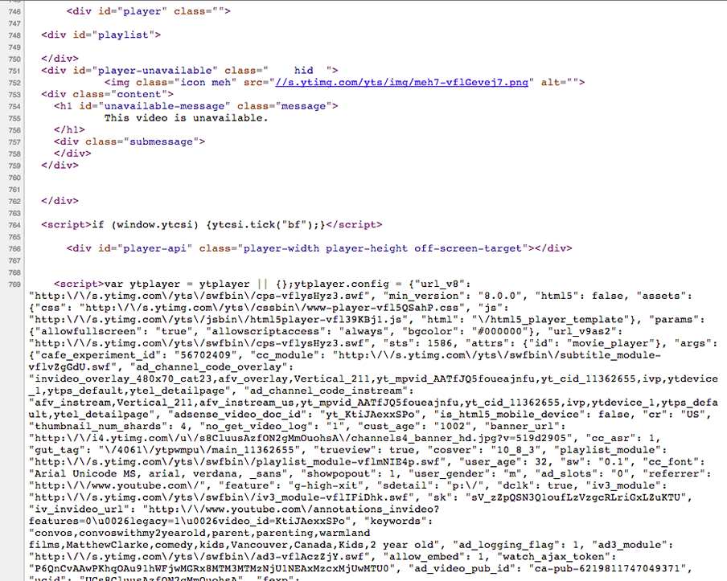
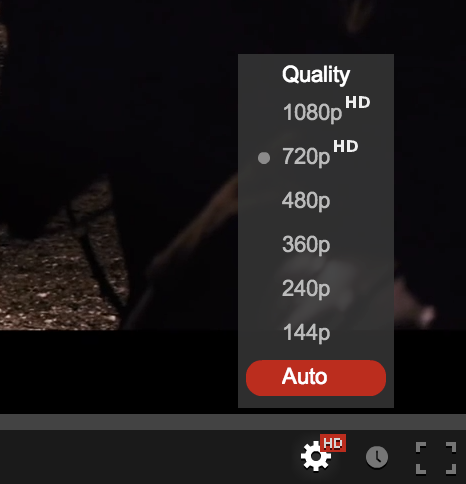
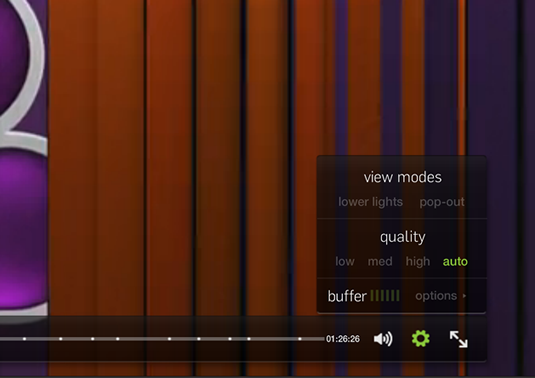
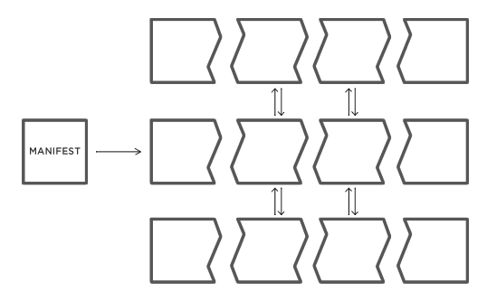

The goal of video performance is to provide quality video while removing waiting from the video viewing experience
Three areas where waiting may occur
- Player Loading
- Video File Loading
- Connection Management
Connection Speed Management
Player Loading
Video Playback Technology
VS
JavaScript: Why is it used?
- Embed code generation
- Custom features with HTML5
- API Access
JavaScript: Best Practices
- Combine
- Minify
- Host on a CDN
- Load before </body>*
...
</body>
</html>
JavaScript: Loading for Video Pages
- Load immediately after the video in the HTML
- Ajax load other major content pieces
- Use an async loader
Youtube Page Source

JavaScript: Async Loader
<HEAD>
<BODY>
myVideoPlayer.js
var _vidqCopy = _vidq || [];
_vidq = {
push: function(placeholder_id){
// Player Initialization
};
}
_vidqCopy.forEach(_vidq.push);
Video File Loading
Video Player Settings
PRELOAD: Use when you expect the user to watch the video on the page and you want it to load quickly.
AUTOPLAY: Use when the page is dedicated the video and you know the user will watch it.
Loading videos sooner in HTML5
With the load() method on the video element, you can trigger video loading sooner than the browser would normally.
Transfer
- CDN
-
Follow content-caching best practices but:
- "replays" are less common than repeat visitors
- don't expect caching from mobile devices
Video Encoding
Know your audience.
Video Encoding: Resolutions
- Start with the most common display sizes
- Dimensions divisible by 16
- De-interlace
Video Encoding: Frame Rates
- 30 FPS is a good max frame rate
- Reduce to 15 FPS for lower bitrate streams
Video Encoding: Bit Rates
- Target below your average customer's bandwidth
- Audio quality can be more important than video quality
Video Encoding: MP4 Settings
- Make sure the headers are at the front of the file ("QT fast start", "Optimze for web")
- Use the highest profile setting your device targets can handle
Connection Speed Management
Starting Strategy
$$\frac{bitrate}{bandwidth} < 1 \implies spinner $$
Bitrate Selection
Encode multiple renditions
Strategy 1: Manual Selection
Let the viewer decide

Strategy 2: Automatic Selection
- Many analytics libraries record client bandwidth
window.performance

Strategy 3: Dynamic Selection
Adaptive Streaming
swap renditions during playback based on measured bandwidth

HLS is supported on iOS devices and newer Androids. HDS is supported in Flash.
Today
12,149 video requests
| Format | Count |
flv | 7508 |
mp4 | 3912 |
f4v | 286 |
m4v | 124 |
m3u8 | 101 |
avi | 89 |
mov | 70 |
ogg | 36 |
wmv | 13 |
webm | 8 |
ogv | 2 |
(Source: HTTP Archive)
The Future
| Format | Count |
m3u8 | 13 |
mp4 | 10 |
webm | 1 |
The Future
- No javascript for the sake of compatibility
- Peer-to-peer video with webRTC
- Adaptive streaming in javascript with Media Sources